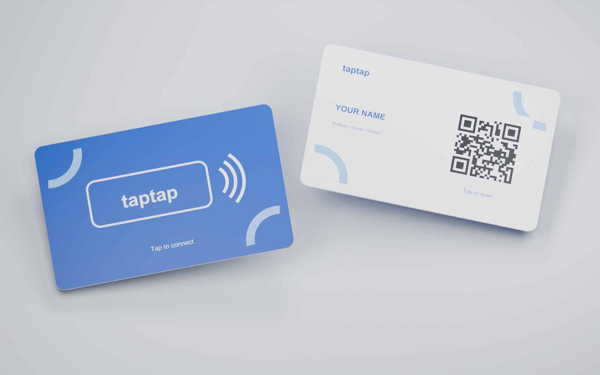

Choose your link
Pick the portfolio, profile, contact page, or other destination you want to share.
THE NEXT WAY TO SAY HELLO
Your portfolio, socials, and contact details can begin with a single gesture. Meet the TapTap card concept.
Concept preview · Not yet available for purchase
Designed to make the first step easier. Tap with a compatible phone or use a real, configured QR code to open the destination chosen for the card.

A simple journey from your card to the destination you want people to see.
Pick the portfolio, profile, contact page, or other destination you want to share.
Bring the card near a compatible phone. A configured QR code can offer a scan option.
The link opens directly, so the conversation can keep moving.
THE IDEA BEHIND TAPTAP
TapTap is still a concept. Here is what the current prototype shows.
Not yet. This site presents the card and proposed options while the product is being developed. Pricing and availability will be shared later.
The proposed one-time card uses a fixed URL and would need a rewrite to change it. The proposed smart card uses an editable TapTap destination while its plan is active.
No. The QR code in the card render is a visual placeholder. A real card would need a generated QR code for its configured destination.
Tap behavior depends on the phone's NFC support and settings. A real, configured QR code can provide another way to open the link.